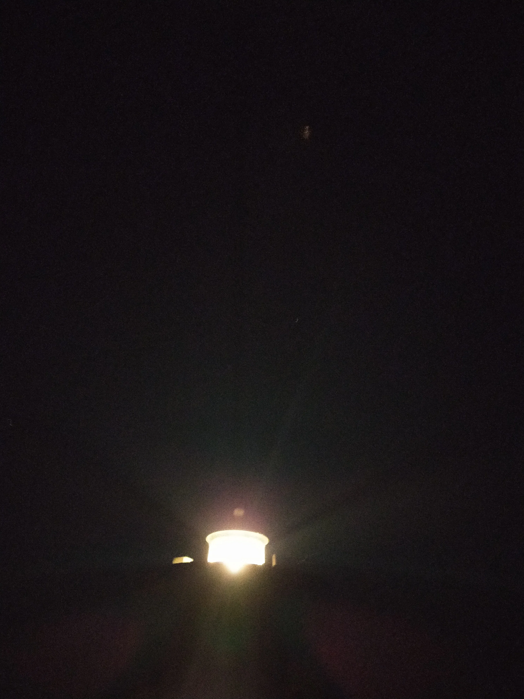
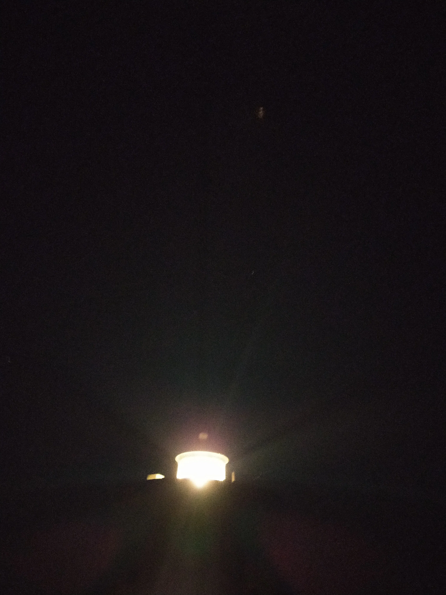
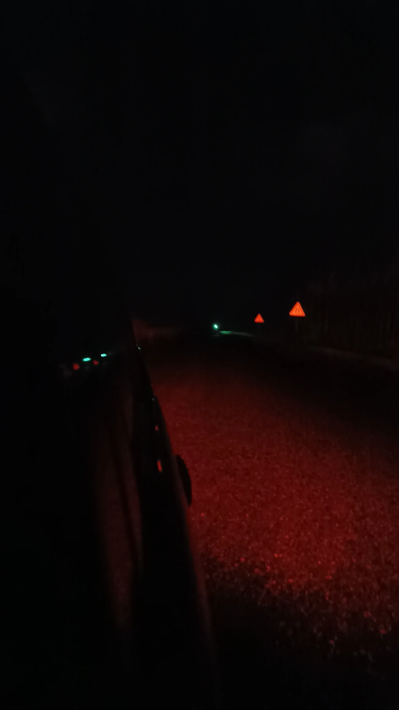
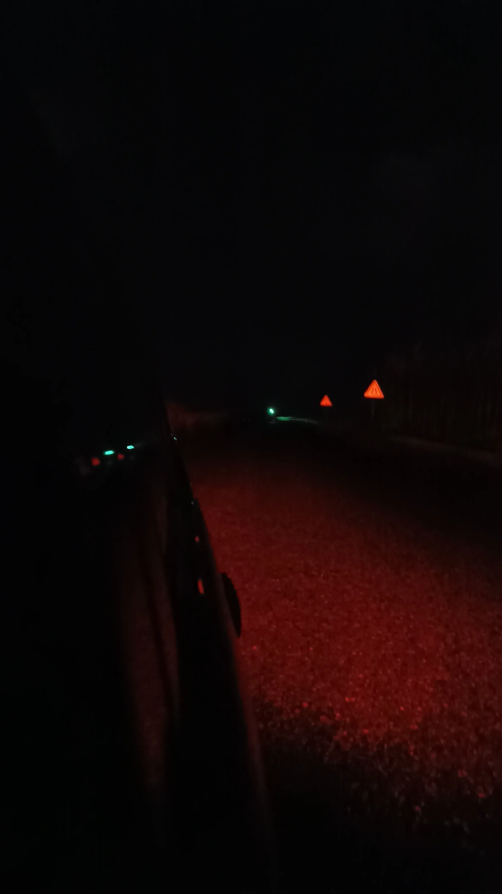

Alexithymia
"Alexithymia" (əˌlɛksɪˈθaɪmɪə), noun: an inability to recognize, understand, and describe emotions.
Capitalism-fueled technological advances has lead to extreme individiualismification of society
causing a pandemia of alienation-depression that oppresses the individual onto itself and - having cut
off the possibility of interaction with the Other - makes self-recognition and objective self-reflection
impossible. What derives is emotions-deprived automata who are totally extraneous to feelings.
This series is a representation of this condition, expressing the inability to recognize emotion.


Urbs
"Urbs" investigates the esotheric force of light in urban darkness, collapsing geometries into abstract kaleidoscopic intermittencies.


.webp)


Self-portraits
Art is always self-referential. It's in its nature and it's in our nature. There is no other way this can be. That is why I believe my self-portraits are perhaps my most meaningful works. A shallow deconstruction of the self through light and shadow. Something that the eye cannot see but the mind can perceive.


Birth
"Birth" explores the atomical landscape of nature, through different levels of granularity, exploding it into a metaphor for the microscopical and the macroscopical.


There used to live a gnome in our garden
A story in seven scenes shot in three different points of view: indoors from a house window, outdoors from a backyard and on the branch of an apple tree.


000000
"000000" is a study on black - under the form of color, darkness or simply absence of light - and its relationship with arbitrarily intense springs of bursting light.
 



Brut
For this series I embrace a more raw approach to photography trying to focus on artificial shapes (and once again, inevitably, on lights and shadows) and their relationship with the sky.


Various
Various works which are not currently part of any series.


 
